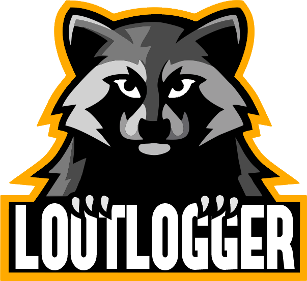

AO Loot Logger
RPM repository for Fedora, RHEL, and derivatives
This page hosts a signed dnf/yum repository for
AO Loot Logger,
which writes loot grabbed by other players in Albion Online to a file.
Install
sudo dnf config-manager --add-repo https://matheussampaio.github.io/ao-loot-logger/rpm/ao-loot-logger.repo
sudo rpm --import https://matheussampaio.github.io/ao-loot-logger/rpm/RPM-GPG-KEY-ao-loot-logger
sudo dnf install ao-loot-loggerBrowse the repo
Package pool and repo metadata · ao-loot-logger.repo · signing key